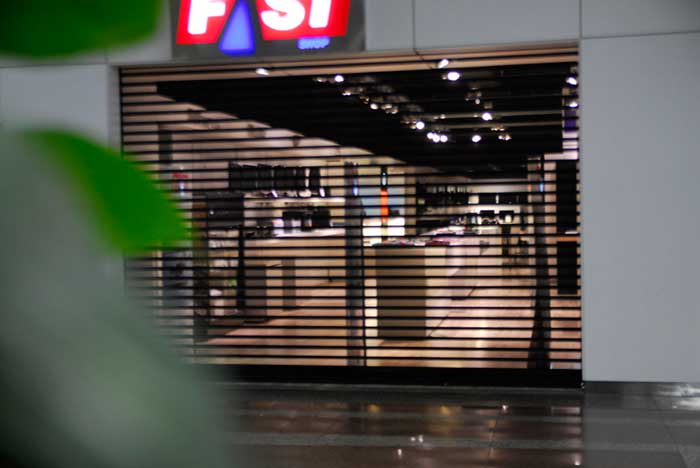

Primeiramente busque estar atento aos barulhos causados pelos zumbis
para que você possa saber a hora certa de se locomover.Se estabeleça em lugares com poucas entradas de preferencia uma, para que você não seja pego de surpresa e de preferencia com um portão resistente.

Loja da PSI
local fechado com apenas uma entrada,otima para se estabelecer,mas necessita de reabastecimento de comida.